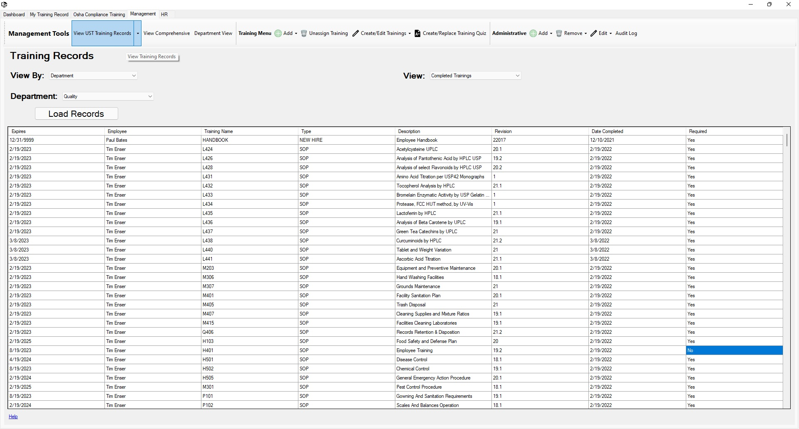

Return to Main Menu
View Training Progress by Department
The Training Record Viewer page can be accessed by pressing the "View UST Training Records" button in the toolbar of the management tab.
On this page, you can view the training records for a department or employee(s). You can view trainings that are past due, upcoming, or already completed.
Note: The training records that are shown are only the trainings currently assigned to the employee(s),
not a comprehensive history of trainings completed by the employee(s).

Instructions:
-
Navigate to the Training Record Viewer page.
-
Select View By: "Department".
-
Select a Department to view.
-
Select what type of records you wish to view (Past Due, Upcoming, or Completed).
View Types:
-
Completed Trainings
This view shows the trainings currently assigned to the employees in the selected department that have been completed. It includes both required and optional trainings.
-
Past Due
This view shows the trainings currently assigned to the employees in the selected department that are past their due date. It only includes required trainings.
-
Upcoming Trainings
This view shows the trainings currently assigned to the employees in the selected department that are approaching their due date. It only includes required trainings.
-
The records may automatically load, but if they don't, press the "Load Records" button.